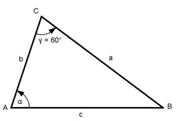

Aufgabe 171 Wie groß sind die Seite c und der Winkel α, wenn a + b = 52 cm, γ = 60° , A = 160 * √3 cm2 und a > b sein soll?

a + b = 52 cm | -b a = 52 – b sin 60° = ½ * √3 a * b * sin γ (52 – b) * b * sin γ A = ---------------- = ----------------------- 2 2 (52 * b – b2) * ½ * √3 160 * √3 = ------------------------ |: √3 2 52 * b – b2 160 = --------------- |*4 4 640 = 52 * b – b2 |+b2 b2 + 640 = 52 * b | -52 * b b2 - 52b + 640 = 0 p = -52 ; q = 640 b1,2 = b1,2 = 26 ± b1,2 = 26 ± b1,2 = 26 ± 6 b1 = 26 + 6 = 32 cm b2 = 26 – 6 = 20 cm a1 = 52 – b1 = 52 cm – 32 cm = 20 cm a2 = 52 – b2 = 52 cm – 20 cm = 32 cm Wegen a > b ist a = 32 cm und b = 20 cm Fall SWS: Cosinussatz: c2 = a2 + b2 - 2 * a * b * cos γ c2 = 322 + 202 - 2 * 32 * 20 * cos 60° c2 = 322 + 202 - 2 * 32 * 20 * 0,5 = 784 c2 = 784 |√ c = 28 cm Fall SSW: Sinussatz: a c ------- = -------- |*sin γ sin α sin γ a * sin γ ------------- = c | *sin α sin α a * sin γ = c * sin α | :c a * sin γ sin α = ------------ = c 32 cm * sin 60° 32 cm * 0,866 = ----------------- = ---------------- = 28 cm 28 cm = 0,9897 --> α = 81,8°